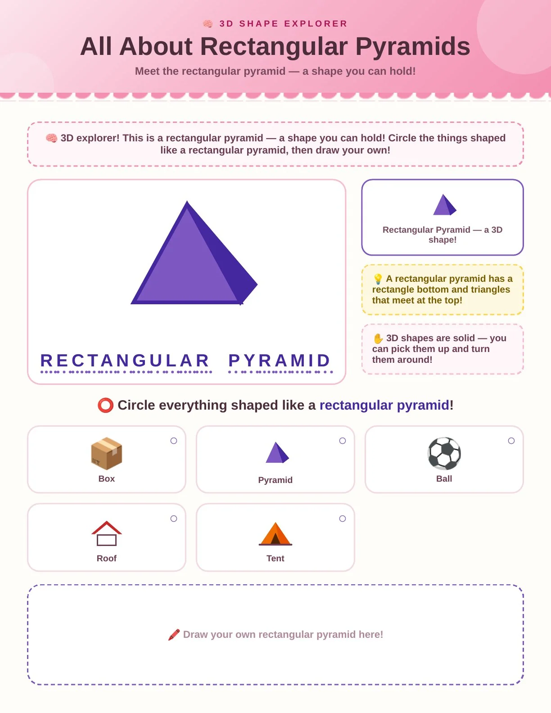

Rectangular Pyramid Activities For Kids Explore Pyramid 3D Shapes With Rectangle Bases
Help your child explore rectangular pyramids with printable activities that build 3D shape recognition and geometry vocabulary.
Quick Answer
This free printable rectangular pyramid activity is designed for toddlers and preschoolers ages 2–5. A rectangular pyramid is a 3D shape with a rectangle for its base and 4 triangle faces that lean in and meet at a single point on top, called the apex. The worksheet includes hands-on tracing, coloring and identification exercises that build early learning skills through play. Download and print at home with no signup needed — no account required, just print and start learning, and explore rectangular pyramids in rooftops, tents and museum buildings.
At a Glance
- Ages: Toddlers and preschoolers (ages 2–5)
- Activity: Learning the rectangular pyramid — rectangle base, 4 triangle faces
- Skills: 3D shape recognition: rectangular pyramid
- Format: Printable worksheet (PDF)
- Cost: Free, no signup
🏛️ Learn About a Rectangular Pyramid
A pyramid is the 3D shape children already half-know from pictures of Egypt — with one honest difference worth teaching: the famous Egyptian pyramids stand on SQUARE bases, while this page's pyramid stands on a rectangle. Same family, different base. The recipe is: 1 rectangle base + 4 triangle faces, all leaning together to meet at one point — the apex — at the top.
Count the faces on the worksheet's drawing as you trace: four triangles you can see wrapping up to the point, plus the rectangle underneath that you cannot see but know is there. That invisible base is a lovely early-geometry moment — a face the drawing hides but the mind supplies. Pyramids reward that kind of thinking: half the shape's story is always on the far side.

🖨️ Download Your Free Rectangular Pyramid Printable
Trace the rectangular pyramid, color it in, and hunt for rectangular pyramids around your home. Print it out, grab the crayons, and you're ready — no signup needed.
⬇️ Download Free Printable 🖨️ Print(opens in new tab)🎁 Free printable for toddlers & preschoolers
🔍 Rectangular Pyramid Hunt Around Your Home
Turn learning into a game! Hunt for rectangular pyramids in rooftops first — a hip roof on a house, where four slanted sides climb to a ridge or point, is this shape's closest everyday cousin — then tents with four sloping sides, and museum and pavilion buildings whose roofs taper to a point. Count how many you can find and cheer for each one.
Widen the hunt with the square-versus-rectangle detective game: show your child a picture of the Great Pyramid and ask about its base. It is a square — making it a square pyramid, this shape's famous cousin. Deciding which pyramid a roof or picture shows, by picturing its hidden base, is exactly the spatial thinking this page exists to build.
💡 Why Learn About the Rectangular Pyramid?
Pyramids teach the apex idea — that flat faces can lean together and meet at a point — and with it, the difference between a prism (same slice all the way through) and a pyramid (shrinking to a point). That contrast is the organizing idea of the whole beginner 3D set: tents versus pyramids, slices versus points. A child who can sort shapes by “does it come to a point?” owns a real classification tool.
The shape also carries unmatched story power. Pyramids are tombs, temples, roofs and mountains in miniature — the oldest large buildings humans ever made — and a child who has traced one looks at pictures of Egypt, Mexico and museum roofs with recognition instead of vagueness. Geometry that connects to wonders gets remembered.
📚 Keep Exploring Shapes
Discover more free 3D shape activities, printables, and learning ideas created for busy parents.
🎁 Back to 3D Shape Activities